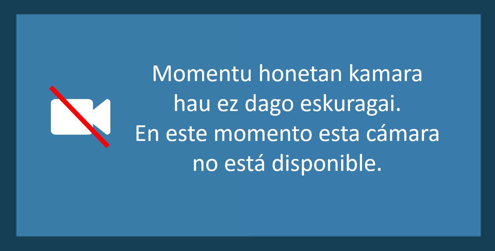

<dom-module id="x-media" >


<template>
	<style >


	#container {
	background-color: #0A2533;
	padding: 5px;
	height:100%;
}

	@media (max-width:350px){
		video{width:100%;height:100%;}
		object{width:860px;height:480px;}


	}

	@media (min-width:351px){
		video{width:100%;height:100%;}
		object{width:100%;height:100%;}

	}
	#loading {
		position: absolute;
		top:40%;
		left:45%;

}
</style>

<div  id="container"  class='template-all-layouts'>
	<div id='subContainer' style='background-color:#173F56;height:100%'>
	 <video tabIndex=-1 id='{{ida}}' preload mute controls></video>
	 <object width="500" height="500" tabIndex=-1 id='{{ida}}' type="video/broadcast"></object>
	 <div id='etbmuteimg' style='display:none;width:100%;height:100%;background-color:#173F56;position:absolute;top:0px;left:0px;overflow:hidden;border:5px solid #0A2533;'>
	 	</img>
	 </div>
	</div>
</div>

</template>
</dom-module>
 <script>
Polymer({
	is:'x-media',
  behaviors:[ComponentQueryBehavior,ComponentStatusBehavior],
	hostAttributes:{
		skew:0.0,
		sm:null,
		l:''
	},
	properties:{
		file:{
			 type:String,

		},
			ismuted:{
				type:String,
				value:'false'
			},
			customCmd:{
	        type:String,
	        value:'',
	        observer: 'customCmdReceived'
	    },
			ida:String,
			player:String

	},

	ready: function() {
		var _this = this;
		this.ida = "player1"+this.id;
		if (navigator.userAgent.toLowerCase().indexOf('hbbtv')!=-1){
			if (this.id ==="video1"){
				Polymer.dom(this.querySelector('#subContainer')).removeChild(this.querySelector('video'));
				var video = this.querySelector('object');
				video.bindToCurrentChannel();
				this.addEventListener('component-query',this.onMediaQuery.bind(this),true);
	                        document.addEventListener ('motion-ready',this.smReady.bind(this));

			}
			else{
			   Polymer.dom(this.querySelector('#subContainer')).removeChild(this.querySelector('object'));

			}
		}
		else {
			document.addEventListener ('motion-ready',this.smReady.bind(this));
			Polymer.dom(this.querySelector('#subContainer')).removeChild(this.querySelector('object'));
			// Asegurar que si para vuelva a reproducirse el video
		}

 	},
	muteChanged:function(){
		 if (this.ismuted === true){
			 		this.mutePlayer();
		}
	},
	smReady:function(e){
		var _this = this;
		this.sm = mediascape.AdaptationToolkit.Motion;
		var id = 0;
	  	setTimeout(function(){
			var video =_this.querySelector('video');
			_this.sm.controller = _this.sm.addMedia(video);
		
		_this.sm.controller.addEventListener("timeupdate", _this.checkBuffer.bind(_this));
	       _this.sm.controller.play();
		},1000);
},
	play:function(){
			if (navigator.userAgent.toLowerCase().indexOf('hbbtv')!=-1){
				 var video = this.querySelector('object');
         video.stop();
				 if (this.id == "video1")video.bindToCurrentChannel();
			}
			else
		 	if (this.sm) this.sm.controller.play();
	},
	pause:function(){
			if (navigator.userAgent.toLowerCase().indexOf('hbbtv')!=-1){
				var video = this.querySelector('object');
			  video.stop();
			}
			else
		 		if (this.sm) this.sm.controller.pause();
	},
	checkBuffer:function(){
			console.log("update time");
         },

  start_volumeChanged:function(currentVol){
		this.$.container.children[0].volume=parseInt(currentVol);
	},

	mutePlayer:function(){
		if (navigator.userAgent.toLowerCase().indexOf('hbbtv')!=-1){
			var video = this.querySelector('object');
			video.volume =0;
		}
		else
			this.querySelector('video').muted = true;
	},
	soundPlayer:function(){
		if (navigator.userAgent.toLowerCase().indexOf('hbbtv')!=-1){
			var video = this.querySelector('object');
			video.volume = 1;
		}
		else
			this.querySelector('video').muted = false;
	},
	restart: function (){
		this.sm.controller.pause();
	  this.sm.controller.currentTime = 0;
	},
	customCmdReceived: function(data){
			if(data==='mutePlayer'){
				this.mutePlayer();
				this.ismuted = true;
			}
			else if(data==='soundPlayer'){
				this.soundPlayer();
				this.ismuted = false;
			}
			else if(data==='offSound'){
				this.mutePlayer();
				this.ismuted = true;
			}
			else if(data==='onSound'){
				this.soundPlayer();
				this.ismuted = false;
			}
			else if(data==='muteEtb'){
	        	//this.querySelector('video').style.display='none';
	        	this.$.etbmuteimg.style.display='block';

	      	}
	      	else if(data==='soundEtb'){
	        	//this.querySelector('video').style.display='block';
	        	this.$.etbmuteimg.style.display='none';

	      	}

	},
	unload:function(){
		 var video = this.querySelector('video');
		 this.loaded = false;
		 if (navigator.userAgent.toLowerCase().indexOf('hbbtv')==-1){
			 var video = this.querySelector('video');
			 video.src="";
		 }


	},
	load:function(){
	     var video = this.querySelector('video');
       var _this = this;
			 this.loaded = true;
			 this.pause();
			if (video){
			 video.src = this.file;
			 if(this.ismuted==="true"){
				 video.muted=true;
			 }
			}
			this.play();

	},
	onMediaQuery:function(e){
		 if (navigator.userAgent.toLowerCase().indexOf('hbbtv')!=-1){
			var video = this.querySelector('object');
			
			video.style.width= this.style.width;
			video.style.height = this.style.height;
                        video.bindToCurrentChannel();
                }
                
	}


});
 </script>
